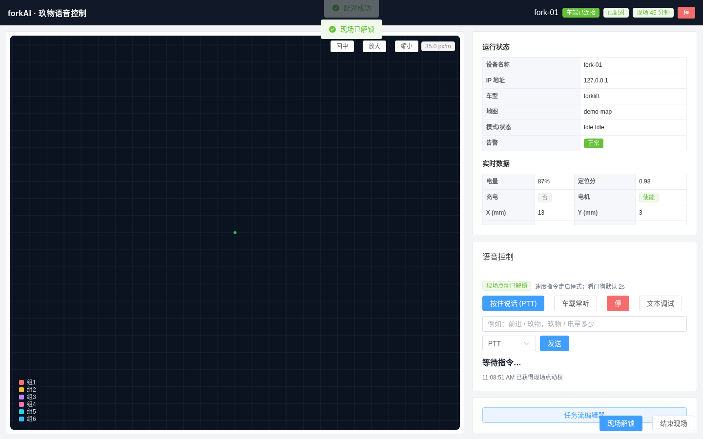
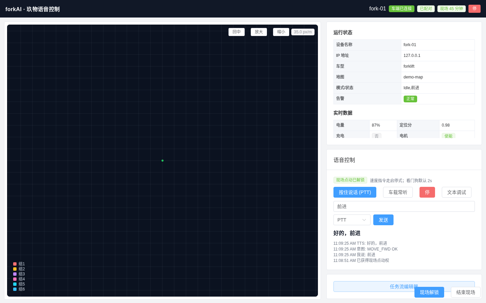
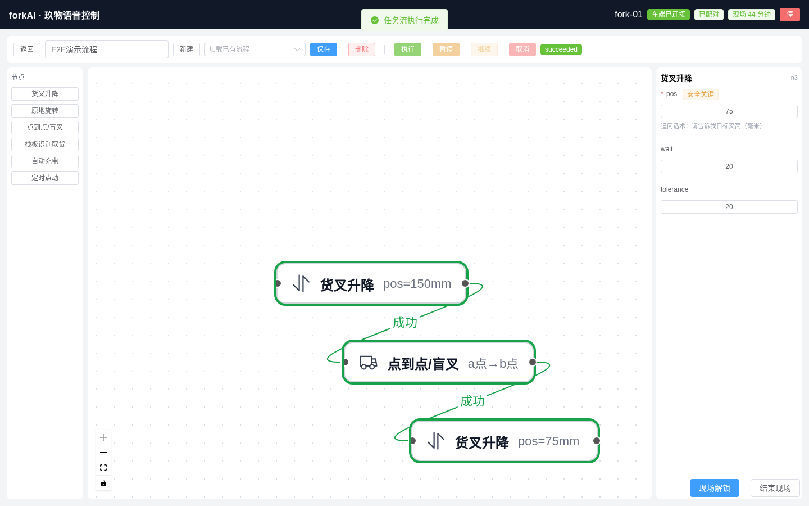

项目启动期 · 技术可行性探索（PoC）
forkAI：叉车语音控制与任务流编排的技术探索
本次汇报目标：同步探索进展——在模拟车端环境下，
「语音 → 意图 → 控车 → 任务流」技术链已跑通，可作为后续正式方案底座；
同时标清边界与未知，对齐探索结束标准。
是什么
需求驱动的技术探索
不是试点交付，也不是正式上线方案。
已验证
Mock 环境链路跑通
自动回归全绿，能力边界已基本摸清。
待对齐
探索结束标准
真车最小验证集 + 短时真车窗口。
02 · 项目需求原文
需求从哪来
背景与痛点
工厂车间 · 无人叉车交互弱
- 车间嘈杂，现有 AMR 主要靠实体按键/手柄
- 交互方式单一、操作繁琐，人机效率低
- 复杂场景下难以快速、自然地下达指令
建设目标
智能叉车 AI 语音控制系统
- 语音识别 · NLP · 大模型语义理解 · 端侧实时控制
- 自然语言完成驾驶/升降/任务/查询/安全干预
- 支持口语、模糊、复合指令、动态改任务、智能问答
- 本地离线部署，低延迟响应
定位说明：上述为项目启动期的需求输入；本轮 forkAI 是据此做的技术可行性探索，不是正式交付版。
03 · 需求拆解分析
原文诉求 → 探索落点
| 拆解类型 |
原始需求要点 |
本轮探索落点 |
| 本期主攻 |
语音识别、NLP/大模型理解、离线低延迟；驾驶、升降、任务调度、状态查询、安全干预；口语/模糊/复合指令、动态改任务、智能问答 |
ASR/NLU/TTS 全离线链路；六任务 + 任务流编辑/执行/语音触发；分级锁与急停退场；缺参追问与流控 — mock 已跑通 |
| 下沉车端 |
智能绕障 |
forkAI 不直接做绕障算法；由车端 jarvis 执行，探索侧仅保留指令下发路径 |
| 待真车验证 |
嘈杂车间唤醒与识别；复合/模糊指令现场效果；端侧实时控制可靠性 |
软件链路有设计与 mock 证据；RK3588 延迟、音区、route 完成语义等需真车窗口验证 |
拆解原则：能在探索期验证的进主攻；车端已有能力的不重复造轮；必须物理世界才能定论的标为待验。
04 · 探索产出
Mock 环境下已跑通的能力
语音链路
ASR · NLU · TTS
- 流式中文识别（sherpa-onnx）
- 规则 + 小模型混合意图
- 本地 TTS + 可打断播报
六任务
点动到充电闭环
- 点动 / 旋转 / 货叉
- 点到点·盲叉 / 栈板取货
- 自动充电 + 缺参追问
任务流
编辑 · 执行 · 语音触发
- 流程图编辑（成功/失败分支）
- 暂停 / 继续 / 取消
- 中文名模糊匹配启动
一句话：技术链在模拟车端上已闭环，证明「统一服务 + 全离线」路线可行。
05 · 技术路线
技术架构图
全离线
统一 FastAPI 后端
替代 V1 双服务
对接既有 jarvis
06 · 系统测试截图
Mock 联调：配对解锁 + 文本语音指令
总览页已配对 / 已解锁 E2E · mock-jarvis

文本指令「前进」 意图 MOVE_FWD OK · TTS 好的，前进

07 · 系统测试截图
Mock 联调：任务流编辑并执行成功
E2E演示流程 · succeeded 货叉150 → a点到b点 → 货叉75

截图环境：mock-jarvis(:8080) + forkai-core(:19000)；对应 Playwright 用例与 week2/3/4 自动回归口径一致。真车界面观感可能不同，语义待真车复核。
08 · 验证证据
Mock 已过 · 真车待验
| 验证项 |
Mock 环境 |
真车 / RK3588 |
| 闸门能力（配对/点动/停止等） |
已通过回归 |
待真车复核 |
| 六任务语音触发与执行 |
week2 9/9 PASS |
待逐项联调 |
| 任务流引擎（顺序/分支/暂停取消） |
week3 7/7 PASS |
待完整任务流跑通 |
| 语音触发任务流 + 异常收尾 |
week4 9/9 PASS |
待真车验证 |
| ASR / LLM 延迟与部署 |
x86 开发机达标 |
RK3588 待复核 |
| route 完成语义判定 |
按 mock 语义实现 |
需与真车对齐 |
口径：Mock 全绿证明软件链路成立；不构成试点成功率数据，真车项仍为探索关键路径。
09 · 诚实边界
已知边界与未知项
必须真车才能定
关键未知
- jarvis route 完成/失败的真实语义
- 货叉高度范围与确认阈值
- 现场音区唤醒率与噪声表现
- RK3588 上 ASR/LLM 线程与延迟
探索阶段主动降级
已接受的取舍
- 并行组编辑器 UI 留作增强
- 0.5B 模型偶发不稳，规则兜底
- V1 双服务冻结，不并行演进
- forkweb 不跟随本次探索更新
10 · 收口线
建议的探索结束标准
达到以下真车最小集，即视为本轮技术探索可收口，再讨论正式方案/立项口径。
1
货叉语音可控
真车上完成升降指令，并确认高度与完成反馈语义正确。
2
六任务各至少成功 1 次
点动、旋转、货叉、点到点/盲叉、栈板取货、自动充电。
3
2 条完整任务流跑通
含成功分支流转；记录延迟与失败原因，形成真车简报。
11 · 下一步
建议的下一步
近期
短时真车验证窗口
- 优先对齐 route 下发与完成判定
- 按「最小集」逐项打勾
- 同步观察工控机部署可行性
验证通过后
再进入正式讨论
- 是否写入正式技术方案
- 试点范围与资源安排
- 与车端/现场流程的职责边界
原则：先验证，再立项；用最小真车集决定探索是否结束，避免过早承诺上线。
12 · 请示
请领导确认
1
方向是否认可
将 forkAI 作为启动期技术探索底座，继续沿「统一后端 + 全离线」路线推进。
2
结束标准是否同意
货叉可控 + 六任务各 1 次 + 2 条任务流，作为本轮探索收口线。
3
是否安排短时真车窗口
用于完成上述最小验证（探索验证，非试点上线）。
期望结论
确认「方向 + 结束标准」；若同意，请支持协调一次短时真车验证窗口。